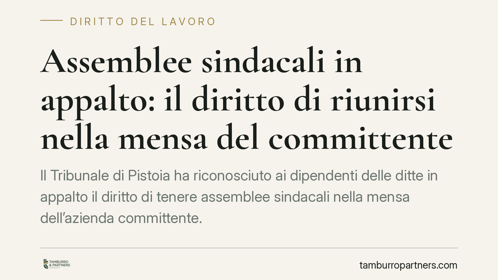

Assemblee sindacali in appalto: il diritto di riunirsi nella mensa del committente
Il Tribunale di Pistoia ha riconosciuto ai dipendenti delle ditte in appalto il diritto di tenere assemblee sindacali nella mensa dell'azienda committente. La decisione, fondata sull'articolo 20 dello Statuto dei lavoratori e su un protocollo aziendale, incide sul rapporto tra committente, appaltatore e organizzazioni sindacali e merita attenzione pratica.

Il caso
La Fiom Cgil Firenze Prato Pistoia ha ottenuto dal Tribunale di Pistoia il riconoscimento del diritto, per i lavoratori impiegati da ditte in appalto, di svolgere assemblee sindacali nei locali mensa dell'azienda committente.
Il nodo è questo: i dipendenti dell'appaltatore operano stabilmente dentro lo stabilimento del committente, ma non hanno un rapporto di lavoro diretto con quest'ultimo. Da qui il dubbio su dove e come possano esercitare i diritti sindacali previsti dalla legge.
Il Tribunale ha risolto la questione a favore dei lavoratori, valorizzando sia la norma statutaria sia un protocollo aziendale che disciplinava i rapporti con le organizzazioni sindacali.
Inquadramento normativo
Il riferimento centrale è l'articolo 20 della Legge n. 300/1970 (Statuto dei lavoratori), che riconosce ai lavoratori il diritto di riunirsi in assemblea "nell'unità produttiva in cui prestano la loro opera". La norma parla di unità produttiva, non di titolarità formale del rapporto di lavoro: conta il luogo dove l'attività si svolge concretamente.
È qui il passaggio decisivo. Nei contesti di appalto cosiddetto "interno" — dove la manodopera dell'appaltatore lavora dentro lo stabilimento del committente — l'unità produttiva in cui il lavoratore presta opera coincide, di fatto, con i locali del committente. Negare l'assemblea significherebbe svuotare il diritto proprio per chi lavora in appalto, cioè una platea tutt'altro che marginale.
A rafforzare la decisione si aggiunge il protocollo aziendale, uno strumento negoziale con cui l'azienda e le organizzazioni sindacali avevano già regolato le relazioni sindacali all'interno dello stabilimento. Il protocollo diventa, in questo modo, fonte integrativa che conferma la legittimità dell'uso degli spazi comuni.
Implicazioni pratiche
Per il committente, la pronuncia chiarisce che la messa a disposizione di spazi — come la mensa — per le assemblee dei lavoratori in appalto non è una concessione discrezionale, ma può costituire oggetto di un diritto azionabile. Il rifiuto ingiustificato espone al rischio di una condotta antisindacale ai sensi dell'articolo 28 dello Statuto.
Per l'appaltatore, la decisione conferma che i propri dipendenti conservano pieni diritti sindacali anche quando lavorano presso terzi. L'organizzazione del lavoro in appalto non può tradursi in una compressione di tali diritti.
Per le organizzazioni sindacali, si consolida un orientamento utile a tutelare i lavoratori in filiere produttive frammentate, dove la separazione formale tra imprese rischia di indebolire la rappresentanza.
Va ricordato che si tratta di una decisione di merito, legata agli elementi del caso concreto — in particolare al protocollo aziendale. Non costituisce, di per sé, un principio di automatica applicazione in ogni contesto di appalto.
Cosa fare in concreto
- Verificate i protocolli e gli accordi aziendali esistenti: la presenza di clausole sulle relazioni sindacali negli appalti interni può essere decisiva in caso di controversia.
- Mappate gli spazi comuni dello stabilimento (mense, sale, locali di servizio) e definite per iscritto le modalità d'uso per le assemblee, prevenendo conflitti.
- Coordinate committente e appaltatore nella gestione dei diritti sindacali: una regolamentazione condivisa riduce il rischio di contestazioni per condotta antisindacale.
- Documentate ogni diniego: se l'uso degli spazi viene rifiutato, motivate la decisione in modo puntuale e tracciabile.
- Consigliamo di valutare preventivamente, con l'assistenza di un legale, la compatibilità delle prassi aziendali con l'articolo 20 dello Statuto, soprattutto nei contesti di appalto interno stabile.
Perché conta
La decisione del Tribunale di Pistoia si inserisce in una tendenza più ampia: estendere la tutela dei diritti sindacali oltre il confine formale del contratto di lavoro, guardando alla realtà organizzativa. In un mercato in cui gli appalti interni sono diffusi, la questione di dove e come i lavoratori possano riunirsi è destinata a tornare spesso. Chi gestisce appalti ha interesse a regolarla prima, non durante il contenzioso.
Contributo informativo a cura di Tamburro & Partners – Avv. Giuseppe Tamburro. Non costituisce parere legale.
Ogni storia di lavoro ha i suoi tempi.
Se gestisci HR e vuoi un confronto su contenzioso, ispezioni o licenziamenti, scrivi allo studio. Ti rispondiamo entro un giorno lavorativo.